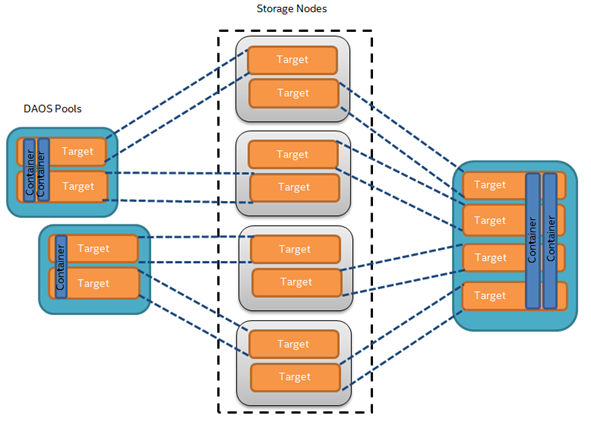
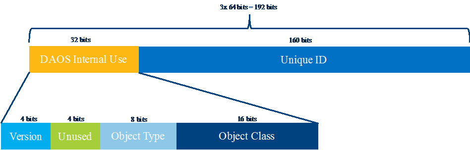

DAOS Storage Model
In this section, we describe the DAOS storage paradigm including its transaction, security and fault models.
Architecture
We consider a HPC cluster with hundreds of thousands of compute nodes interconnected via a scalable high-speed, low-latency fabric, where all or a subset of the nodes, called storage nodes, have direct access to byte-addressable persistent memory and, optionally, block-based storage as well (e.g. HDD or SSD). As shown shown in the <a href="#a">figure </a> below, a storage node can export through the network one or more DAOS targets, each of which corresponds to a fixed-size partition of its directly-accessible storage. A target is the unit of both fault and concurrency. A storage node can host as many targets as it likes, in the limit of the available storage capacity. A DAOS pool is a collection of targets distributed across multiple different storage nodes. A pool is responsible for both data and metadata resilience. Each pool is identified by a unique UUID and maintains target membership in persistent memory.
<a id="a"></a>Figure: Example of four Storage Nodes, eight DAOS Targets and three DAOS Pools
The <a href="#b">figure </a> below represents the fundamental abstractions of the DAOS storage model. A pool can host multiple transactional object stores called DAOS containers, identified by UUIDs. Each container is a private object address space, which can be atomically modified and snapshotted independently of the other containers sharing the same pool. DAOS objects in a container are identified by a unique object address and have a type (either byte array, KV store or document store, see 3.1.4 for more details) which is encoded in the object ID (see 3.1.3). Objects can be distributed across any target of the pool for both performance and resilience.
<a id="b"></a>Figure: Architecture of DAOS Storage Model

Table 3-1 shows the targeted level of scalability for each DAOS concept.
| DAOS Concept | Order of Magnitude |
|---|---|
| Pool | 10<sup>5</sup> Targets (hundreds of thousands) |
| Pool | 10<sup>5</sup> Containers (hundreds of thousands) |
| Container | 10<sup>9</sup> Objects (billions) |
| Pool | 10<sup>12</sup> Objects (trillions) |
| Target | 10<sup>7</sup> Objects (tens of millions) |
| Key-Value/Document Store Object | 10<sup>9</sup> Records (billions) |
| Byte Array Object | 10<sup>15</sup> Bytes (peta) |
DAOS Target
A target is the basic unit of storage allocation and space management. It is associated with a reservation of persistent memory optionally combined with block-based storage for capacity. A target has a fixed capacity expressed in bytes and fails operations when it is full. Current space usage can be queried at any time and reports the total amount of bytes used by any data type stored in the target.
A target is assumed to have limited capability and to be a single point of failure. Firstly, its backend storage is assumed to be attached to a single node and hence, has no failover capability in case of storage node failure. Secondly, a target does not necessarily implement an internal redundancy schema to protect stored data against storage media failure. As a consequence, a dynamic state is associated with each target and is set to either up and running, or down and not available. Nonetheless, a target is still responsible for data integrity and thus, manages checksums internally to detect and report corruption.
A target is the unit of both performance and concurrency. Hardware components associated with the target, such as the backend storage medium, the server, and the network, have limited capability and capacity. Target performance parameters such as bandwidth and latency are exported to upper layers for optimal placement.
DAOS Pool
A pool is a set of targets spread across different storage nodes over which data and metadata are distributed to achieve horizontal scalability, and replicated or erasure-coded to ensure durability and availability.
Each target is associated with a unique pool, which maintains the membership by storing in persistent memory in the pool map the list of participants. The membership is definitive and consistent, and membership changes are sequentially numbered. The pool map not only records the list of active targets, it also contains the storage topology under the form of a tree that is used to identify targets sharing common hardware components. For instance, the first level of the tree can represent targets sharing the same motherboard, then the second level can represent all motherboards sharing the same rack and finally the third level can represent all racks in the same cage. This framework effectively represents hierarchical fault domains, which are then used to avoid placing redundant data on targets subject to correlated failures. At any point in time, new targets can be added to the pool map and failed ones can be excluded. Moreover, the pool map is fully versioned, which effectively assigns a unique sequence to each modification of the map, more particularly for failed node removal.
Upon target failure and exclusion from the pool map, data redundancy inside the pool is automatically restored online. This process is known as data resilvering. Resilvering progress is recorded regularly in special logs in the pool stored in persistent memory to address cascading failures. When new targets are added, data is automatically migrated to the newly added targets to redistribute space usage equally among all the members. This process is known as space rebalancing and uses dedicated persistent logs as well to support interruption and restart.
A pool is only accessible to authenticated and authorized applications. Multiple security frameworks could be supported, from simple POSIX access control lists to third party-based authentication (such as Kerberos). Security is enforced when connecting to the pool. The pool stores a persistent list of containers which includes the container UUIDs and the name associated with each container. Initially, only single-user pool will be supported, which means that once connected, an application can access any container hosted in the pool. In a future implementation, authorization could be managed per-container. Moreover, a more fine-grained control (e.g. per-object, per-POSIX file, per-dataset…) could be implemented by the top-level API. Upon successful connection to the pool, a connection context is returned to the application process.
As detailed previously, a pool stores many different sorts of persistent metadata, such as the pool map, the list of containers, authentication and authorization information, and resilvering and rebalancing logs. Such metadata are critical and require the highest level of resiliency. Therefore, the pool metadata are replicated on a few nodes from distinct high-level fault domains. For very large configurations with hundreds of thousands of storage nodes, only a very small fraction of those nodes (in the order of tens) run the pool metadata service. With a limited number of storage nodes, DAOS can afford to rely on a consensus algorithm to reach agreement and to guarantee consistency in the presence of faults and to avoid split-brain syndrome. Moreover, per-container metadata may be stored in the same raft instance as the pool metadata or in a dedicated one. A pool can then contain an arbitrary set of raft engines, one of which manages the pool metadata and is used to assign the other raft engine to individual containers (discussed in section 3.1.3). Members of the metadata service elect a leader, which is responsible for processing new metadata updates and servicing reads. Updates are validated once they have been written to a quorum of replicas. The leader sends periodic heartbeats to inform the other replicas that it is still alive. A new leader election is triggered if replicas don’t receive any heartbeat from the current leader after a certain timeout.
DAOS Container
A container represents an object address space inside a pool. To access a container, an application must first connect to the pool and then open the container. If the application is authorized to access the container, a container handle is returned. This includes capabilities that authorize any process in the application to access the container and its contents. The opening process may share this handle with any or all of its peers. Their capabilities are revoked either on explicit container close or on request from the system resource manager. A set of processes sharing the same container handle is called a process group. A process may belong to multiple process groups corresponding to one or more containers. Multiple process groups can open the same container, regardless of their open mode, and multiple concurrent read-write handles will be supported. Object metadata, if any, are stored in an object index table (OIT) stored in persistent memory. The purpose of this table is to store the per-object internal metadata (e.g. object schema attributes), if any. The object index table is highly resilient and supports massive-concurrent accesses; it is thus distributed and replicated over many targets in different fault domains. There is one such table per container. Objects in a container may have different schemas for data distribution and redundancy over targets. Dynamic or static striping, replication or erasure code, algorithmic target selection and specific target affinity are as many parameters required to define the object schema. The object class defines common schema attributes for a set of objects. Each object class is assigned a unique identifier and is associated with a given schema at the pool level. A new object class can be defined at any time with a configurable schema, which is then immutable after creation, or at least until all objects belonging to the class have been destroyed. For convenience, several object classes expected to be the most commonly used will be predefined by default when the pool is created, as shown Table 3 2. The affinity-based class consists of objects primarily stored locally on a specific target and replicated on remote targets selected algorithmically.
| Object Class (RW = read/write, RM = read-mostly | Target Selection | Redundancy | Metadata in OIT, (SC = stripe count, RC = replica count, PC = parity count, TGT = target |
|---|---|---|---|
| Affinity-based | Hybrid | Replication | Rank of affinity target + RC |
| Small size & RW | Algorithmic | Replication | No (static SCxRC, e.g. 1x4) |
| Small size & RM | Algorithmic | Erasure code | No (static SC+PC, e.g. 4+2) |
| Large size & RW | Algorithmic | Replication | No (static SCxRC over max #targets) |
| Large size & RM | Algorithmic | Erasure code | No (static SCx(SC+PC) w/ max #TGT) |
| Unknown size & RW | Algorithmic | Replication | SCxRC (e.g. 1x4 initially and grows) |
| Unknown size & RM | Algorithmic | Erasure code | SC+PC (e.g. 4+2 initially and grows) |
As shown in the following <a href="a">figure</a>, each object is identified in the container by a unique 192-bit object address. On object creation, the top-level layer should provide a unique 160-bit sequence number that will be completed with the encoding of internal DAOS metadata, such as the object type and class ownership, to form the object address inside the container. It is thus the responsibility of the top-level API to implement a scalable object ID allocator. This 160-bit identifier can be used by upper layers of the stack to store their own object metadata as long as it is guaranteed to be unique inside the object address space. On successful creation, the object identifier is the full 192-bit address. An object address is for single use only and can be associated with only a single schema.
<a id="a"></a>Figure: DAOS Object ID Structure
A container is the basic unit of atomicity and versioning. All object operations are explicitly tagged by the caller with a transaction identifier called an epoch. Operations submitted against the same epoch are committed atomically to a container. Epochs are arranged in total order such that epochs less than or equal to the highest committed epoch (HCE) correspond to immutable container versions. Committed epochs for a container may periodically be aggregated to reclaim space utilized by overlapping writes and to reduce metadata complexity. A snapshot is a permanent reference that can be placed on a committed epoch to prevent aggregation. Container metadata (epoch state, list of snapshots, container open handles, the layout of the object index table, etc.) are stored in persistent memory and maintained by a dedicated container metadata service that either uses the same raft engine as the parent metadata pool service, or has its own raft instance. This is configurable when creating a container.
Transactional Model
The primary goal of the DAOS transaction model is to provide a high degree of concurrency and control over durability of the application data and metadata. Applications should be able to safely update the dataset in-place and rollback to a known, consistent state on failure.
Each DAOS I/O operation is associated with an explicit, caller-selected transaction identifier called epoch. This effectively means that the DAOS transactions are exported to the top-level API, which is responsible for grouping together updates to move the data model from one consistent state to another. This approach is very different from traditional database management systems, object stores and file systems that rely on transparent transactions to guarantee internal consistency.
Figure: Example of four storage nodes